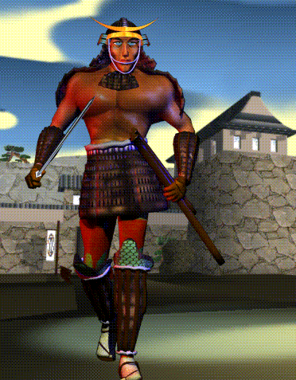
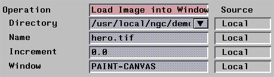
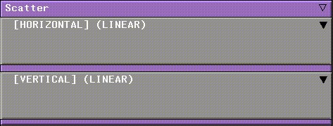
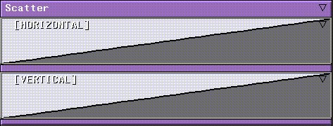
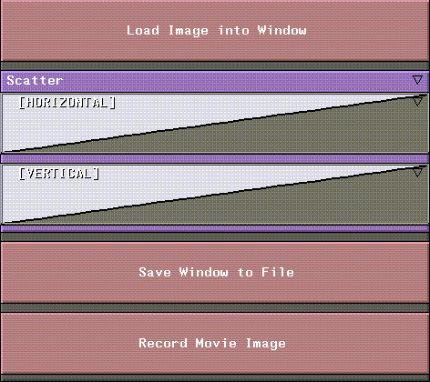
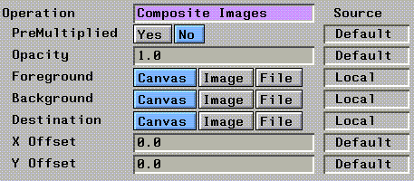
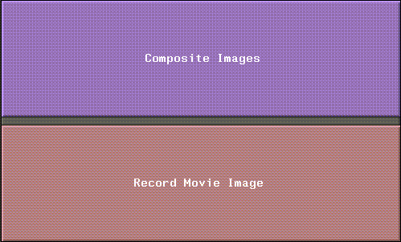

[N-World Contents] [Book Contents] [Prev] [Next] [Index]
Animating Paint Operations
In this chapter, you'll learn how to drive N-Paint operations from N-Dynamics. You'll learn how to perform such tasks as loading and saving sequences of images, how to modify a loaded image from a script, and how to composite images in N-Paint.

In this Chapter
You'll lean how to:
Calling N-Paint Operations
Because N·World is completely integrated, you can drive any of its applications from N-Dynamics. In the same way that you use it to animate skeletons with the Skeletal Animation System, or objects in N-Geometry, you can work with images in N-Paint.
This section walks you through the process of building a script that will drive N-Paint to perform some simple operations. In this script, we'll do the following:
Create a New Script
1. (CLICK-L) on File>Create New Script.
- Name the script PAINT-FILTER and specify four channels when prompted.
Loading Images into a Window
In the first channel in the script, you'll set up the parameters for reading in a new image each frame:
2. (CLICK-M) on the first channel in the script.
3. (CLICK-L) on the Operation field.
4. (CLICK-L) on Image Operations>Load Image into Window.
5. (CLICK-L) on the Directory field and enter the following directory:
/usr/local/ngc/demo/images
- Note that the default names shows a "padding" scheme which can be used to load a sequence of numbered images. If you are loading in a sequence of images, they should have a name like this:
filename-nnnn.ext
- where filename is the image name, nnnn is the frame number, and ext is the extension for the images.
6. (CLICK-R) on the Names field and select the following image:
hero.tif
7. (CLICK-M) on the Increment field and enter a value of 0.
- This is used if you are reading in a numbered series of images and don't want to use every image in the sequence.
8. (CLICK-L) on the Window field and select Paint Canvas.
- This specifies where you are loading the image to.
- Your parameters should look something like this when you're done:

Figure 8.1 Loading an image into N-Paint
9. (CLICK-L) on Do It.
- Note. There are other operations for loading images into particular N-Paint buffers; see the section "Using the Composite Images Operation," on page 8-10 for more information.
Performing N-Paint Operations
In the second channel, we'll do something relatively simple; we'll apply a Scatter ink to the entire image. However, we want the effect to be cumulative over the course of the animation. This means that the values which determine how much the image is scattered must be made dynamic-they should change over time:
10. (CLICK-M) on the second channel in your script.
11. (CLICK-L) on the Operation field.
12. (CLICK-L) on Paint>Filtering>Scatter.
- The Scatter ink moves pixels in the image in both directions.
13. On both the Horizontal and Vertical fields, (CLICK-L) on Source and choose DynamicValue from the menu that appears.
- By making their values dynamic, you create subchannels under the operation that let you specify how much horizontal and vertical scattering occur over time.
14. (CLICK-L) on Do It.
15. (CLICK-L) on the channel to open it up.
- Note the two channels that let you control the horizontal and vertical scatter:

Figure 8.2 Adding dynamic channels for the Scatter operation
16. (CLICK-L) on the [Horizontal] (Linear) subchannel of the Scatter channel.
17. (CLICK-M) on the curve channel.
- Specify a Start Value of 0 and an End Value of 150.
18. Set the same values for the [Vertical] (Linear) channel.
- Your channels should now look something like this:

Figure 8.3 Dynamic values for the Scatter operation
Saving Images
In this script, we're going to both save the images and create a movie file (in the next section). Movie files are good for previewing, but if you actually want to create new frames, you should save each image after it's been modified:
19. (CLICK-M) on the third channel in your script.
20. (CLICK-L) on the Operation field.
21. (CLICK-L) on Dynamics>Image Operations>Save Window to File.
- This operation lets you save images to file from any of three windows:
22. (CLICK-L) on the Directory field and enter the directory where you want to save the images.
23. (CLICK-R) on the Name field and specify the name and padding scheme for the image.
- Note that the default names shows a "padding" scheme which can be used to load a numbered sequence of images. If you are loading in a sequence of images, they should have a name like this:
filename-nnnn.ext
- where filename is the image name, nnnn is the frame number, and ext is the extension for the images.
24. (CLICK-L) on the Format field and select the file format to use when writing out the images.
25. (CLICK-M) on the Increment field and enter a value of 0.
- The increment controls how images written out to disk are numbered. If you specify an increment of 1, frames numbers are incremented by 1.
- For example, if you use a Name of image-001 and an Increment of 1, images will be named like this:
image-001
image-002
image-003
- ...and so forth.
26. (CLICK-L) on the Input field and select Paint Canvas.
- This specifies where the image you want to write to disk is sitting. Since we're performing N-Paint operations, we want to save the active paint image or paint canvas.
27. (CLICK-L) on the Scale field and set the value to 1.0.
- If you want to scale the output images (either smaller or larger) enter the factor by which they should be scaled in the Scale field.
28. (CLICK-L) on Yes or No next to Alpha to specify whether or not to save the alpha channel with the images.
29. (CLICK-L) on Do It.
Saving a Movie
In order to preview the effect of N-Paint's Scatter filer, you should write out a movie file:
30. (CLICK-M) on the fourth channel.
31. (CLICK-L) on Operation>Dynamics>Image Operations>Record Movie Image.
- Writing a movie file is described in more detail in the section "Saving Color Animations," on page 5-11 and in the N-Dynamics Reference Guide.
Your script should look like this:

Figure 8.4 Script for filtering a series of images
32. (CLICK-L) on the Animate button in the N-Dynamics window.
To play back the animation:
33. Open a UNIX shell.
34. Go to the directory into which you wrote the movie clip.
- Movies have the extension .clip. You should see a file that looks like this in the directory you specified above:
script-name.clip
35. Enter the following command at the UNIX prompt:
movieplayer script-name.clip
- The image is scattered both vertically and horizontally.
You can use this approach to create interesting transitions between sequences, or simply to edit a sequence of images. Try working with other inks to create other interesting effects!
Compositing Images
One task that you're likely to perform quite a bit is the compositing of one series of images over another, using the alpha channel of the image being composited as a "mask."
In N-Dynamics, you can build a script that lets you composite a sequence of images over the same background image or one series of images over another.
In this script, we'll:
Create a New Script
1. (CLICK-L) on File>Create New Script.
- Name the script COMPOSITE and specify two channels when prompted.
Using the Composite Images Operation
In the previous script, we didn't need to do any "layering" operations; it was simple enough to load our image into N-Paint, perform the operation on the image, and save it back out.
In this script, however, we need to work with two images, a background and a foreground. We'll use a new N-Dynamics operation to load an image into a particular buffer in N-Paint:
2. (CLICK-M) on the first channel in the script.
3. (CLICK-L) on the Operation field.
4. (CLICK-L) on Paint>Canvas Operations>Composite Images.
- The parameters for the operation look something like this:

Figure 8.5 Composite Images operations parameters
5. (CLICK-L) on Yes next to PreMultiplied.
- The PreMultiplied field determines whether the matte of the foreground image is used in the compositing operation. If set to Yes, only the area with a matte is composited onto the background image.
- Opacity is a multiplier that can be used to make the composited foreground image partially opaque.
Loading the Foreground Image
6. (CLICK-L) on the File button next to Foreground.
- Specify the directory and file name of the foreground image. For this example, select the following image:
/usr/local/ngc/demo/images/scaled-hero.tif
- If you are loading in a series of images, specify a padding scheme in the filename as described in the section on the Composite command N-Dynamics Reference Guide.
7. Set your increment to 0.
Loading the Background Image
8. (CLICK-L) on the File button next to Background.
- Specify the directory and file name of the background image. For this example, select the following image:
/usr/local/ngc/demo/images/background.rgb
- If you are loading in a series of images, specify a padding scheme in the filename as described in the section on the Composite command N-Dynamics Reference Guide.
9. Set your increment to 0.
Saving the Composited Images
To save the composited images:
10. (CLICK-L) on the File button next to Destination.
- Specify the directory and file name to which the composited images should be written.
- If you are saving a series of images, specify a padding scheme in the filename as described in the section on the Composite command N-Dynamics Reference Guide.
11. (CLICK-L) on Do It.
Saving a Movie
If you want to play back the composited frames in sequence, you should write out a movie file:
12. (CLICK-M) on the second channel.
13. (CLICK-L) on Operation>Dynamics>Image Operations>Record Movie Image.
- Writing a movie file is also described in the section "Saving Color Animations," on page 5-11 and in the N-Dynamics Reference Guide.
Your completed script should look like this:

Figure 8.6 Script for compositing images
14. (CLICK-L) on the Animate button in the N-Dynamics window.
Playing Back the Animation
To play back the animation:
15. Open a UNIX shell.
16. Change to the directory into which you wrote the movie clip.
- Movies have the extension .clip. You should see a file that looks like this in the directory you specified above:
script-name.clip
17. Enter the following command at the UNIX prompt:
movieplayer script-name.clip
- The foreground image is composited over the background image at each frame.
Congratulations!
You've now learned to how to load and save images into and out of N-Paint using an N-Dynamics script. You've also learned how to modify an image while it's on the canvas and how to composite images.
[N-World Contents] [Book Contents] [Prev] [Next] [Index]
 Another fine product from Nichimen documentation!
Another fine product from Nichimen documentation!
Copyright © 1996, Nichimen Graphics Corporation. All rights
reserved.